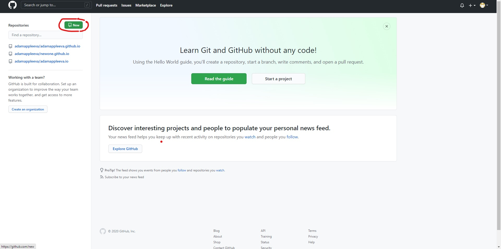
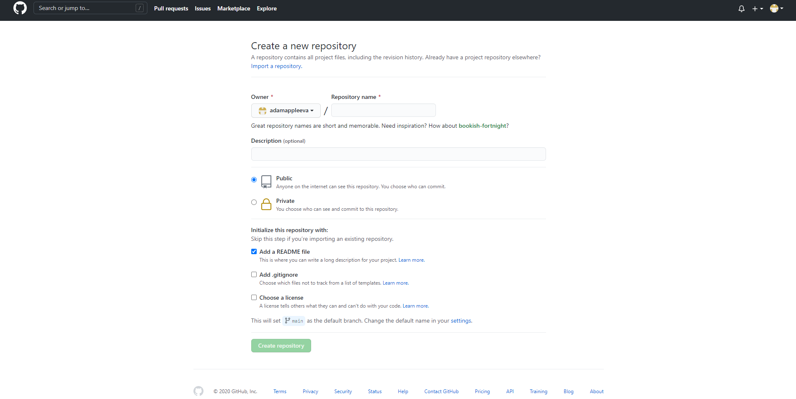
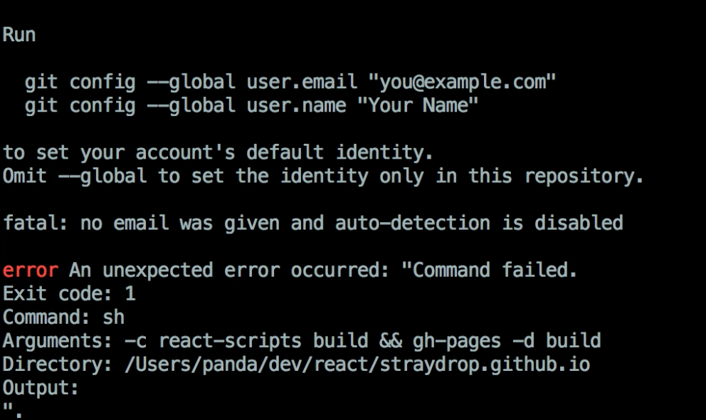
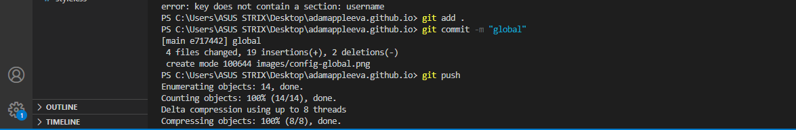

IT Beginner Tutorial
OUR FIRST TUTORIAL
1. Git and Github
FIRST, WE NEED TO UNDERSTAND WHAT ARE GIT AND GITHUB?

Git and GitHub are not the same thing. Git is an open-source, version control tool created in 2005 by developers working on the Linux operating system; GitHub is a company founded in 2008 that makes tools which integrate with git. You do not need GitHub to use git, but you cannot use GitHub without using git. There are many other alternatives to GitHub, such as GitLab, BitBucket, and “host-your-own” solutions such as gogs and gittea. All of these are referred to in git-speak as “remotes”, and all are completely optional. You do not need to use a remote to use git, but it will make sharing your code with others easier.
Git
is an open-source version control system that was started by Linus Torvalds—the same person who created Linux. When developers create something (an app, for example), they make constant changes to the code, releasing new versions up to and after the first official (non-beta) release. Version control systems keep these revisions straight, storing the modifications in a central repository. This allows developers to easily collaborate, as they can download a new version of the software, make changes, and upload the newest revision. Every developer can see these new changes, download them, and contribute.Similarly, people who have nothing to do with the development of a project can still download the files and use them.
GitHub
is a code hosting platform for version control and collaboration. It lets you and others work together on projects from anywhere. GitHub is the single largest host for Git repositories, and is the central point of collaboration for millions of developers and projects. A large percentage of all Git repositories are hosted on GitHub, and many open-source projects use it for Git hosting, issue tracking
The difference
between Git and Github is that Github is a website while Git is an application.
Sign up for Github
Click the linnk to go to Github sign up website.You can see a new Github sign up tab like the picture below:

Then, you can sign up by fill in the blank your USERNAME, EMAIL ADDRESS, AND PASSWORD.
Installation Git to your PC
Click the linnk to download Git to your PC.Depending on what kinds of your computer, choose the appropriate version: MAC, WINDOWN, OR LINUX?

After installing both Git and Github, you can tried to use them via Visual Studio Code To download Visual Studio Code, click here:
2. Basic Level Git And Github Using
The first thing is to create a repositoryIn the picture below, you can create a new repository by clicking New in the left of your screen
{kind=link}
Then a new screen shows up. Create your repo name followed the syntax reponname.github.io. REMEMBER to add README.md 
{kind=link}
Next, open the Visual Studio Code to use Git.
Fist, open the Terminal on the View
Then, register your username and user email which you registered for your Github account:
For example,
my username is abcdef and my gmail is xyzhex@gmail.com
I have to register : git config --global user.name "abcdef
Then for email : git config --global user.email "xyzhex@gmail.com"

{kind=link}
Then, use git clone + your github repo link so that you can use Git to work on your Repo.
After creating and working on your file, you probably want to upload all your file to your repo on Github. Then you use those following commands:
git add . to add all the files git commit -m " " to create your commit. It should demonstrate what is it! git push to push all the files to your RepoSee the picture below:
{kind=link}